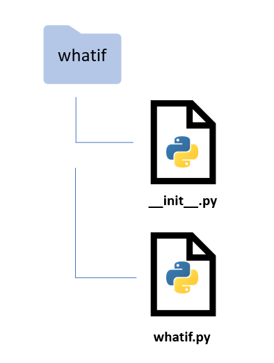
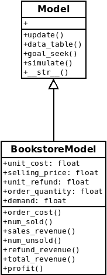

Excel “what if?” analysis with Python - Part 4: Project structure and packaging#
Time to create a proper project structure and turn our growing collection of code into a Python package.
You can also read and download the notebook based tutorial from GitHub - see the notebooks folder.
In the first three parts of this series, we’ve developed some Python approaches to typical Excel “what if?” analyses. This whole series is aimed at those who might have a strong Excel based background, a basic familiarity with Python programming and a desire to increase their Python knowledge.
Along the way we explored some slightly more advanced Python topics (for relative newcomers to Python) such as:
List comprehensions,
Basic OO programming, creating our own classes and using things like
setattrandgetattr,Leveraging scikit-learn’s
ParameterGridclass,Faceted plots using Seaborn and matplotlib,
Tuple unpacking, zip, and itertools,
Safely copying objects,
Root finding with, and without,
scipy.optimize,Partial function freezing and lambda functions,
Using
numpy.randomto generate random variates from various probability distributions,Using
scipy.statsto compute probabilities and percentiles,Importing our
data_table,goal_seekandsimulatefunctions from a module.
Now that we’ve got a critical mass of “proof of concept” code, let’s figure out how to structure our project and create a deployable package. In addition, let’s rethink our OO design and add some much needed documentation to the code.
This material will be part of a new course I’ll be teaching soon. There are a few references to the class (Advanced Analytics with Python, or aap for short) in this post. The course is only “advanced” in relation to the introductory practical computing for data analytics course that my students take first. We are in a school of business and the students don’t get much exposure to heavy quant nor much programming or software engineering. The vague new course title also gives me all kinds of leeway for selecting topics to cover. :)
Python packaging basics#
What is a Python module? What is a Python package? A simple way to think about it is that a module is a Python file containing code and a package is a folder containing Python files and perhaps subfolders that also contain Python files (yes, there are many more details).
There are tools for turning such a folder into packages that can be uploaded to places like PyPI (Python Package Index) or conda-forge (if you’ve used R, think CRAN) from which people can download and install them with package installers like pip or conda.
If you are new to the world of Python modules and packages, a great place to start is the tutorial done by the folks at Real Python - Python Modules and Packages - An Introduction. After going through the tutorial you’ll have some familiarity with concepts needed in our tutorial:
Python modules and how Python finds modules on your system,
the different ways of importing modules,
exploring the contents of modules,
executing modules as scripts and reloading modules,
Python packages, the
__init__.pyfile, importing from packages, and subpackages.
Another good high level introduction to modules, packages and project structure is The Hitchhikers Guide to Python: Structuring Your Project. Of course, one should also visit the official Python Packaging User Guide (start with the Overview), especially with the ever evolving nature of this topic. See this recent series of posts on the State of Python Packaging for an “exhausting (hopefully still kinda high level) overview of the subject”.
With a basic and limited understanding of Python packages, let’s get to turning whatif.py into a package.

Creating a simple Python project structure#
So far, we’ve taken a pretty typical approach to exploring and developing our what if tools:
use Jupyter notebooks to quickly try things out,
single folder for the project,
tried to use good filenames,
when we started moving code out of notebooks and into
whatif.py, we put the script in the same folder as the notebook (makes it easy to do animport whatif).
Many data analysis projects start in a similar way. In those, we usually at least would have a separate data folder. In terms of documentation, there are some scattered code comments and a README file with some notes to myself.
I manually created the following really simple folder structure.
whatif
├── data
├── whatif
├── what_if_1_model_datatable.ipynb
├── what_if_2_goalseek.ipynb
├── what_if_3_simulation.ipynb
└── whatif.py
├── README.md
Notice that for now, I’ve included the notebooks right in the main source code folder as opposed to in a notebooks folder.
However, as the project has grown and we now want to turn whatif.py into a reusable Python package, we need to rethink the organization of the project. In particular,
the current structure is not what’s needed for creating Python packages,
we should have real documentation,
the source code should be separate from example notebooks,
we want a structure that facilitates efficient workflows and reproducible analysis and development.
We want a project structure that doesn’t result in the all too common scenario of us going back to this project in six months and wondering what to make of the haphazard pile of files and folders we’ve created.
Analytics or data science type projects are often a blend of analysis and software development. This parallels the situation that many scientists find themselves. Organizations such as Software Carpentry have arisen to address the growing need for scientists/analysts to be better software developers. They have developed very high quality introductory tutorials on numerous scientific programming related topics such as the basics of R/Python programming, version control, bash shell use, and reproducible scientific analysis.
So, how do you structure a Python project?#
There are no shortage of opinions on this question and there’s no one right answer. As the Python packaging ecosystem has evolved over time, so has the way one can and/or should structure Python projects. In addition, different types of projects (e.g. single installable library package vs a web app) might call for different types of project layouts.
Enter, the Cookiecutter#
Arising from this need to have a simple way to quickly create good project structures for different types of projects was the Cookiecutter. From the docs:
A command-line utility that creates projects from cookiecutters (project templates), e.g. creating a Python package project from a Python package project template.
In a nutshell, from a simple json configuration file and an example folder and file structure, the cookiecutter program asks us a few questions and then generates a skeleton project structure (set of folders and files). It does this by using Jinja2 templates. Here’s what a simple cookiecutter.json file might look like:
{
"project_name": "project name",
"repo_name": "{{ cookiecutter.project_name }}",
"author_name": "Your name (or your organization/company/team)",
"description": "A short description of the project.",
"open_source_license": ["MIT", "BSD-3-Clause", "No license file"],
}
The key values are the cookiecutter attributes that you want to define and the values are the default values and/or options. The {{ SOMETHING }} are the templates. Notice that the default value for repo_name is just the project name you entered. These templates are then used throughout the specific cookiecutter’s example folder structure and the cookiecutter program does a big Search and Replace, filling in templates with their values. Simple but very powerful.
Various people created different cookiecutters (i.e. templates) designed for their type of projects and their workflow and tool preferences. The most relevant for our purposes is the Cookiecutter Data Science project.
It was developed by the folks at DrivenData.org,
has a project structure that is focused on data science type work,
the main project documentation page has a really good introduction to the importance of good project structure and software engineering practices aimed at data science folks who might not be used to thinking of such things.
As was intended in the cookiecutter world, other people cloned the Cookiecutter Data Science template from GitHub and modified it to better suit their needs. One notable such template was developed by the Molecular Sciences Software Institute for their Python Packages Best Practices set of tutorials which are modeled after the Software Carpentry tutorials. We will use
some materials from this MolSSI Tutorial. In their very first lesson they walk you through creating a new project structure from their CMS Cookiecutter. While their cookiecutter has some very nice features, I’ve created our own modified data science cookiecutter called cookiecutter-datascience-aap. Instead of repeating things here, let’s head over to
the cookiecutter-datascience-aap GitHub page and take a look at the README and other content.
Adding files to our new project#
Since we’ve got some work in process in the form of a few Jupyter notebooks and an early version of whatif.py, we can add them to our project. We also have this notebook in which I’m typing right now (feeling very self-referential). I’m going to put the notebooks relating to the first three parts of this series into the examples folder along with a few other examples.
├── examples
│ │ ├── BookstoreModel.py
│ │ ├── new_car_simulation.ipynb
│ │ ├── what_if_1_model_datatable.ipynb
│ │ ├── what_if_2_goalseek.ipynb
│ │ └── what_if_3_simulation.ipynb
Within the notebooks folder, I’m putting this notebook along with some notes in a markdown file.
├── notebooks
│ │ ├── testing_cookiecutter_structures.md
│ │ └── what_if_4_project_packaging.ipynb
Finally, I replaced the placeholder whatif.py file with the working version upon which this project will be built.
Version control#
The very first thing we should do after getting our project initialized is to put it under version control. We’ll use git and GitHub. There are many good tutorials out there for learning the basics of using git and GitHub for version control. I have an introductory lesson that I created for use in an introductory R/Python based analytics course I also teach.
Get a shell open in the main project folder (NOT the package folder). Then we can initialize the project folder as a git repo:
git init
git add .
git commit -m 'initial commit'
Then I went to my GitHub site and created a brand new repo named whatif. Since we already have an existing local repo that we will be pushing up to a new remote at GitHub, we do the following:
git remote add origin https://github.com/<your github user name>/whatif.git
git branch -M main
git push -u origin main
Now you’ve got a new GitHub repo at https://github.com/<your github user name>/whatif.
Source code editing#
For now, we are going to edit whatif.py with a good text editor. In Linux, I use Geany as it has some nice features for programming including syntax highlighting, setting indent to spaces, code folding, a visual code structure tree, and many more. Do a search for “linux best code editors” and you can find additional options for editors.
If you want to spend some time on a long time point of contention, check out the vim vs emacs debate. But to really even appreciate that debate, you should have some familiarity with vi, the precursor to vim. It’s a whole different world than using a modern text editor. I used vi in grad school (decades ago), but any knowledge I had is long gone.
Seriously, don’t do this. Just grab Geany or Atom (any platform) or Sublime Text or Notepad++ (Windows) or some other decent text editor.
Later, we’ll use the PyCharm (or Spyder) IDE, but for now, a good text editor is more than sufficient.
The whatif.py module - initial design#
After completing Part 3 of this series, we had an example model class, BookstoreModel, and three functions that took such a model as one of the arguments and one utility function that was used to extract a Pandas DataFrame from the simulationoutput object (a list of dictionaries).
data_table- a generalized version of Excel’s Data Table tool,goal_seek- very similar in purpose to Excel’s Goal Seek tool,simulate- basic Monte-Carlo simulation capabilities,get_sim_results_df- converts output ofsimulateto a pandas dataframe.
All of these were copied and pasted from their respective Jupyter notebooks and consolidated in the whatif.py file. This module can be imported and its functions used. While this is workable, let’s try to generalize things a bit and improve the design.
[5]:
import numpy as np
import pandas as pd
import matplotlib.pyplot as plt
import seaborn as sns
[6]:
%matplotlib inline
Creating a Model base class#
Everything we’ve done so far has used the one specific model class we created - BookstoreModel. In order to create a new model, we’d probably copy the code from this class and make the changes specific to the new model in terms of its variables (class attributes) and formulas (class methods). However, every model class (as we’ve conceived it so far) also needs to have an update method that takes a dictionary of model variable names (the keys) and their new values. Rather than the modeler
having to remember to do this, it makes more sense to create a generic Model base class from which our specific model classes will inherit things like an update method. I also moved the __str__ function into our new Model base class.
All three of the analysis functions we created (data_table, goal_seek and simulate) rely on this specific implementation of update and require a model object as an input argument. Given that, it makes sense to move these functions from their current place as module level functions to class methods of the new base class, Model. You can find this new Model base class within whatif.py at the whatif project GitHub site.
If you are new to OOP, check out this tutorial which discusses inheritance.
Adding new methods to BookstoreModel#
Anyone who builds spreadsheet models knows that it’s usually better to decompose large formulas into smaller pieces. Not only does this help with model debugging and readability, it provides an easy way to analyze components of composite quantities. For example, sales_revenue is based on the number of units sold and the selling price per unit. Our original implemenation buried the computation of number sold into the sales_revenue function. This makes it tough to do things like
sensitivity analysis on number sold. So, we’ll rework the class a bit to add some new methods. Notice, I’ve also added basic docstrings - more on documentation in a subsequent notebook.
Here’s our updated BookstoreModel class. A few additional things to note beyond the new methods added:
it includes the
Modelbase class within the parentheses in the class declaration,it no longer has an
updatemethod,it no longer has a
__str__method.
BookstoreModel will inherit update from the Model class. It also inherits __str__, but we could certainly include an __str__ method in BookstoreModel if we wanted some custom string representation or just didn’t like the one in the Model base class. This is called method overriding.
[2]:
class BookstoreModel(Model):
"""Bookstore model
This example is based on the "Walton Bookstore" problem in *Business Analytics: Data Analysis and Decision Making* (Albright and Winston) in the chapter on Monte-Carlo simulation. Here's the basic problem (with a few modifications):
* we have to place an order for a perishable product (e.g. a calendar),
* there's a known unit cost for each one ordered,
* we have a known selling price,
* demand is uncertain but we can model it with some simple probability distribution,
* for each unsold item, we can get a partial refund of our unit cost,
* we need to select the order quantity for our one order for the year; orders can only be in multiples of 25.
Attributes
----------
unit_cost: float or array-like of float, optional
Cost for each item ordered (default 7.50)
selling_price : float or array-like of float, optional
Selling price for each item (default 10.00)
unit_refund : float or array-like of float, optional
For each unsold item we receive a refund in this amount (default 2.50)
order_quantity : float or array-like of float, optional
Number of items ordered in the one time we get to order (default 200)
demand : float or array-like of float, optional
Number of items demanded by customers (default 193)
"""
def __init__(self, unit_cost=7.50, selling_price=10.00, unit_refund=2.50,
order_quantity=200, demand=193):
self.unit_cost = unit_cost
self.selling_price = selling_price
self.unit_refund = unit_refund
self.order_quantity = order_quantity
self.demand = demand
def order_cost(self):
"""Compute total order cost"""
return self.unit_cost * self.order_quantity
def num_sold(self):
"""Compute number of items sold
Assumes demand in excess of order quantity is lost.
"""
return np.minimum(self.order_quantity, self.demand)
def sales_revenue(self):
"""Compute total sales revenue based on number sold and selling price"""
return self.num_sold() * self.selling_price
def num_unsold(self):
"""Compute number of items ordered but not sold
Demand was less than order quantity
"""
return np.maximum(0, self.order_quantity - self.demand)
def refund_revenue(self):
"""Compute total sales revenue based on number unsold and unit refund"""
return self.num_unsold() * self.unit_refund
def total_revenue(self):
"""Compute total revenue from sales and refunds"""
return self.sales_revenue() + self.refund_revenue()
def profit(self):
"""Compute profit based on revenue and cost"""
profit = self.sales_revenue() + self.refund_revenue() - self.order_cost()
return profit
To help visualize the class structure, here is a simple UML diagram.

Using the Bookstore Model#
Great, we’ve made some improvements both to BookstoreModel class as well as to the underlyng Model base class (which didn’t exist before). However, if we try to create a new instance of BookstoreModel we quickly run into trouble. In fact, if we try to execute the cell above which defines the BookstoreModel class, we get an error saying that the Model class does not exist. Where is it? It’s in the whatif.py module (which is not in the same folder as this notebook).
Can’t we just import it like we did in Part 3 of this series?
[7]:
from whatif import Model
---------------------------------------------------------------------------
ModuleNotFoundError Traceback (most recent call last)
<ipython-input-7-0b75332d7fae> in <module>
----> 1 from whatif import Model
ModuleNotFoundError: No module named 'whatif'
Where does Python go to look for modules like whatif? It examines something known as sys.path.
[8]:
import sys
print('\n'.join(sys.path))
/home/mark/Documents/teaching/aap/whatif/notebooks
/home/mark/anaconda3/envs/datasci/lib/python38.zip
/home/mark/anaconda3/envs/datasci/lib/python3.8
/home/mark/anaconda3/envs/datasci/lib/python3.8/lib-dynload
/home/mark/.local/lib/python3.8/site-packages
/home/mark/anaconda3/envs/datasci/lib/python3.8/site-packages
/home/mark/anaconda3/envs/datasci/lib/python3.8/site-packages/IPython/extensions
/home/mark/.ipython
A couple things to take away from the sys.path list:
Python first looks in the current working directory,
from the remaining paths, we see that we are working in a conda virtual environment named
datasci.
Since the import of whatif failed, we can conclude that not only is whatif.py not in the current working directory, it also has not been installed in the conda datasci virtual environment (that I created).
Of course, the whole point of this exercise is to turn whatif into an installable package so that we can use it from notebooks like this. Let’s learn how to do that.
Creating the whatif package#
You can find a tutorial on packaging a simple Python project here. Our example is pretty similar and certainly is simple. There are two critical files which we have yet to discuss - __init__.py and setup.py. Both of these were created by our cookiecutter and plopped into our project.
The init.py file#
Well, this got more confusing after Python 3.3 was release in that now there are regular packages and namespace packages. For our purposes, we will just be considering regular packages and discuss a standard purpose and use of __init__.py. This file, which is often blank, when placed into a folder, marks this folder as a regular package. When this folder is imported, any code in __init__.py is executed. Here is the
__init__.py file for the whatif package.
from whatif.whatif import Model
from whatif.whatif import get_sim_results_df
Just focus on the first line. That first whatif is the package (the folder) and that second whatif is referring to the module (the file) whatif.py. We know that the class definition for Model is in that file. After we install the whatif package (which we’ll get to shortly), we could always import it for use in a Jupyter notebook with the statements like those above. However, by including them in the __init__.py file, we have imported them at the package level and can
use these shorter versions in a notebook.
from whatif import Model
from whatif import get_sim_results_df
As the developer, we are including the lines in __init__.py to make it easier on our users by exposing commonly used objects at the package level.
Things can get way more confusing when we start to develop subpackages and have complex dependencies between packages, but for now, this is enough. For a good discussion of __init__.py, check out this StackOverflow post.
Installing our package and learning about that setup.py file#
Finally, we are ready to create our whatif package and then “deploy” it by installing it into a new conda virtual environment. Wider deployment such as publishing our package to PyPI will wait. Since our project is in a public GitHub repo, others can clone our project and install it themselves in the same way we are about to install it. If we really aren’t ready to share our project with the world in any way, we could simply make the GitHub repo private. Even free GitHub accounts get some
limited number of private repos.
Like everything, it seems, in the world of Python packaging there are all kinds of potential complications and frustrations. We’ll be trying to keep things as simple as possible.
The primary role of the setup.py file is to act as a configuration file for your project. At a minimum, this file will contain a call to the setup function which is part of the setuptools package, the primary way Python code is packaged for distribution. The setup function has numerous arguments but we will only use a small number of them.
# setup.py
from setuptools import find_packages, setup
setup(
name='whatif',
packages=find_packages("src"),
package_dir={"": "src"},
install_requires=['numpy', 'pandas'],
version='0.1.0',
description='What if analysis in Python',
author='misken',
license='MIT',
)
Most of the options are actually pretty self-explanatory. However, given our folder structure, two of these lines are particularly important.
packages=find_packages("src"),
package_dir={"": "src"},
The find_packages function is part of setuptools and we are telling setup that it can find our package folders inside of the src folder. See the following two links if you are interested in more technical details on these options and broader issues in the Python packaging world.
Now we are ready to install our package. For that we will use a tool called pip - which stands for “pip installs packages”. Backing up for a second, since we are using the Anaconda Python distribution, we usually use conda for installing packages. However, to install packages that are not in conda’s repositories, we can actually use pip to install packages into conda virtual environments. To learn more about the relationship between conda and pip:
Since we have not published our package to PyPI, we going to install it from our local project folder. Open a shell and navigate to your project folder (it contains setup.py). Make sure you activate the desired virtual environment before installing your package. For example, we saw earlier in this notebook that my active conda virtual environment is called datasci. For development projects, I usually create a new conda
environment to act as a sort of sandbox for trying out new packages. Typically I just clone my datasci environment. For example, to create a clone named whatif, I just do:
conda create -n whatif --clone datasci
conda activate whatif
With the new environment activated, I can install the whatif package with:
pip install .
The “dot” means, install from the current directory (the one with setup.py in it).
So, I’m going to close this notebook, activate my new whatif environment, pip install the whatif package and then restart Jupyter Lab within the whatif environment. … okay, let’s see if we can import from our new whatif package.
[1]:
from whatif import Model
Yep, we can. If we rerun the code cell in which the BookstoreClass is defined, then we can create a default model just to show that things are working.
[7]:
model = BookstoreModel()
print(model)
print(model.profit())
{'unit_cost': 7.5, 'selling_price': 10.0, 'unit_refund': 2.5, 'order_quantity': 200, 'demand': 193}
447.5
What happens when we make changes to whatif.py?#
Our whatif.py module is under active development and we will make changes. What happens then? Similarly, what happens when we add additional files to the whatif package?
Option 1: Reinstall the package
We can redo a pip install . and away we go. Now, if we are using a Jupyter notebook to “test” our new code, we can avoid having to restart the notebook by using a little Jupyter cell magic. Including the following at the top of your notebook and running them first thing will cause all import statements to automatically reload if they detect changes in the underlying imported modules.
%load_ext autoreload
%autoreload 2
Option 2: Do an “editable” install
If you do a pip install with the -e flag, you do what is known as an editable install or installing in development mode.
pip install -e .
This is a common strategy during active development. By doing this, your import is actually using the code under development - pip is creating links to your source code instead of installing source files into some site-packages folder. Doing this along with the autoreload cell magic above provides an easy way to do simple package development in Jupyter notebooks. You can also make use of packages that were installed in this manner when using IDEs such as PyCharm. See
https://packaging.python.org/guides/distributing-packages-using-setuptools/#working-in-development-mode for more info.
Concluding thoughts and next steps#
We have gone over some basic concepts and techniques for:
creating a good Python project structure using a cookiecutter,
putting your project under version control,
improving on our original OO design by implementing a base class,
created an installable package for our growing,
whatiflibrary.
While we’ve certainly glossed over a bunch of details, we can revisit these topics later as we progress in our learning. In addition, there are numerous related topics that we will get to later in the course. For a preview of some these, I highly recommend the tutorial by MolSSI - Python Packages Best Practices. For example, we still need to address:
writing documentation (see the
docs/folder),testing using tools like pytest,
continuous integration (automated testing),
uploading packages to PyPI.
With this current version of whatif, we can begin to try to port other spreadsheet models to Python. I’ve already done this with a typical multi-period cash flow model which revealed a number of interesting modeling challenges - see the new_car_simulation.ipynb notebook in the examples/ folder available from https://github.com/misken/whatif.
[ ]: